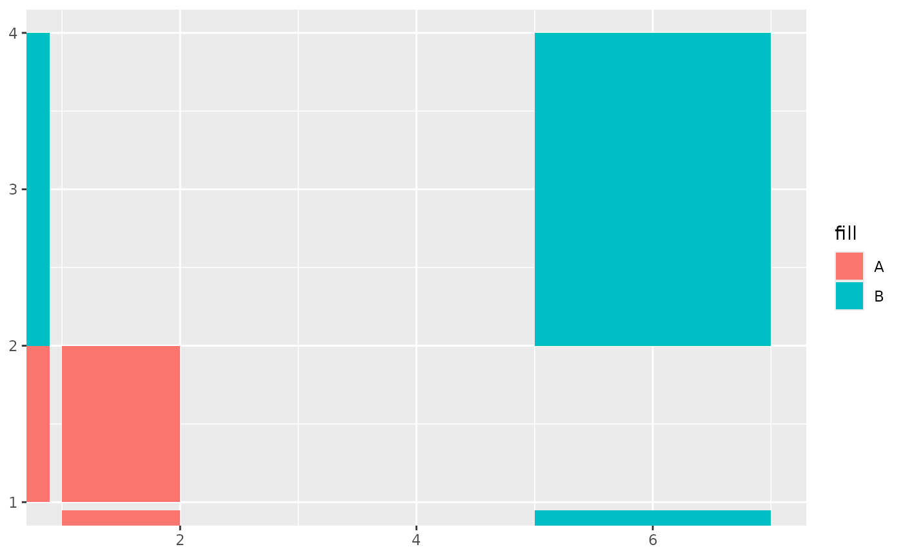
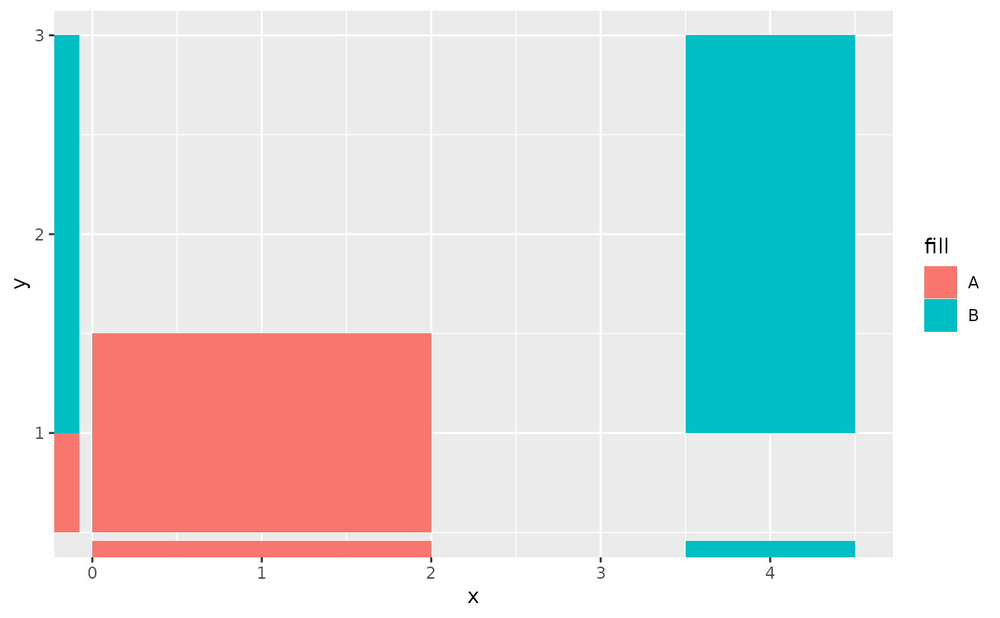

Like rug plots display data points of a 2D plot as lines in the margins, this function plots rectangles in the margins. Rectangular rugs are convenient for displaying one-dimensional, ranged annotations for two-dimensional plots.
Usage
geom_rectmargin(
mapping = NULL,
data = NULL,
stat = "identity",
position = "identity",
...,
outside = FALSE,
sides = "bl",
length = unit(0.03, "npc"),
linejoin = "mitre",
na.rm = FALSE,
show.legend = NA,
inherit.aes = TRUE
)
geom_tilemargin(
mapping = NULL,
data = NULL,
stat = "identity",
position = "identity",
...,
outside = FALSE,
sides = "bl",
length = unit(0.03, "npc"),
linejoin = "mitre",
na.rm = FALSE,
show.legend = NA,
inherit.aes = TRUE
)Arguments
- mapping
Set of aesthetic mappings created by
aes()oraes_(). If specified andinherit.aes = TRUE(the default), it is combined with the default mapping at the top level of the plot. You must supplymappingif there is no plot mapping.- data
The data to be displayed in this layer. There are three options:
If
NULL, the default, the data is inherited from the plot data as specified in the call toggplot().A
data.frame, or other object, will override the plot data. All objects will be fortified to produce a data frame. Seefortify()for which variables will be created.A
functionwill be called with a single argument, the plot data. The return value must be adata.frame, and will be used as the layer data. Afunctioncan be created from aformula(e.g.~ head(.x, 10)).- stat
The statistical transformation to use on the data for this layer, as a string.
- position
Position adjustment, either as a string, or the result of a call to a position adjustment function.
- ...
Other arguments passed on to
layer(). These are often aesthetics, used to set an aesthetic to a fixed value, likecolour = "red"orsize = 3. They may also be parameters to the paired geom/stat.- outside
logicalof length 1 that controls whether to move the rectangles outside of the plot area. For the best results, it is probably best to setcoord_cartesian(clip = "off")and avoid overlap with the default axes by changing the sides argument to"tr".- sides
A
stringof length 1 that controls which sides of the plot the rug-rectangles appear on. A string containing any letters in"trbl"will set it to top, right, bottom and left respectively.- length
A
grid::unit()object that sets the width and height of the rectangles in the x- and y-directions respectively. Note that scale expansion can affect the look of this.- linejoin
Line join style (round, mitre, bevel).
- na.rm
If
FALSE, the default, missing values are removed with a warning. IfTRUE, missing values are silently removed.- show.legend
logical. Should this layer be included in the legends?
NA, the default, includes if any aesthetics are mapped.FALSEnever includes, andTRUEalways includes. It can also be a named logical vector to finely select the aesthetics to display.- inherit.aes
If
FALSE, overrides the default aesthetics, rather than combining with them. This is most useful for helper functions that define both data and aesthetics and shouldn't inherit behaviour from the default plot specification, e.g.borders().
Details
By default, scales are expanded 5\
whereas the rug rectangles will occupy 3\
default. The geom_rectmargin() and geom_tilemargin() versions do the
same thing, but are parametrised differently; see
geom_rect().
These functions do not have hard-coded required aesthetics, since the x and y directions can be omitted by not choosing a side in the corresponding direction, i.e. y-direction variables are omitted when plotting the rug only on the top and/or bottom. This can result in errors when the aesthetics are not specified appropriately, so some caution is advised.
Aesthetics
geom_rectmargin() requires either one of the following
sets of aesthetics, but also can use both:
xmin
xmax
and/or:
ymin
ymax
geom_tilemargin() requires either one of the following
sets of aesthetics, but can also use both:
x
width
and/or:
y
height
Furthermore, geom_rectmargin() and geom_tilemargin() also
understand these shared aesthetics:
alpha
colour
fill
group
linetype
size
Examples
# geom_rectmargin() is parameterised by the four corners
df <- data.frame(
xmin = c(1, 5),
xmax = c(2, 7),
ymin = c(1, 2),
ymax = c(2, 4),
fill = c("A", "B")
)
ggplot(df, aes(xmin = xmin, xmax = xmax,
ymin = ymin, ymax = ymax,
fill = fill)) +
geom_rect() +
geom_rectmargin()

# geom_tilemargin() is parameterised by center and size
df <- data.frame(
x = c(1, 4),
y = c(1, 2),
width = c(2, 1),
height = c(1, 2),
fill = c("A", "B")
)
ggplot(df, aes(x, y,
width = width, height = height,
fill = fill)) +
geom_tile() +
geom_tilemargin()
